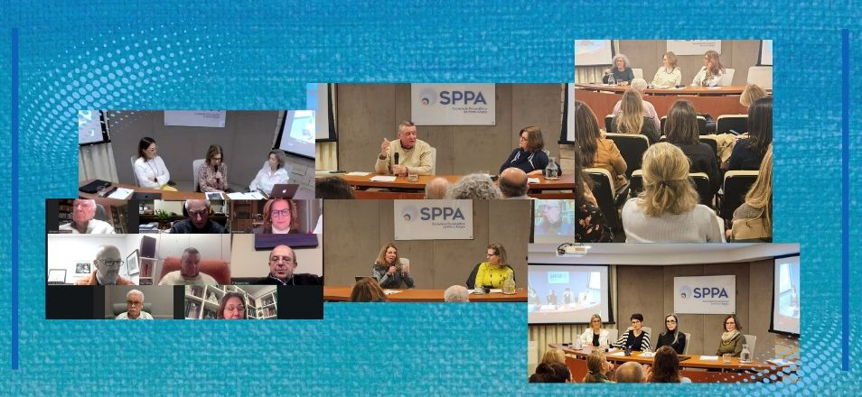

Atividade intensa marca o segundo semestre da Diretoria Científica
- 
 Instigantes atividades foram realizadas no segundo semestre de 2025, levando a profundos debates psicanalíticos de questões da contemporaneidade
Instigantes atividades foram realizadas no segundo semestre de 2025, levando a profundos debates psicanalíticos de questões da contemporaneidade
Atividades interessantes marcaram o segundo semestre da Diretoria Científica, começando pelo mês de julho, quando Viviane Sprinz Mondrzak apresentou seu trabalho "Identidade/Identidades: questões a partir de um caso clínico", vencedor do Prêmio FEPAL 2024.
Já em agosto, aconteceu a apresentação de Raul Hartke, com o tema "A elaboração de experiências traumáticas na relação analítica". Também em agosto, Germano Vollmer Filho apresentou “Traumatismo, dilúvio, preponderância das emoções” com os comentários de Sérgio Lewkowicz. Utilizando a situação traumática que o RS viveu com a grande inundação ocorrida em maio de 2024, o apresentador defendeu a ideia de que situações traumáticas reais precisam ser internalizadas e transformadas em trauma psíquico, a fim de que possam atravessar o processo de luto e, assim, ser processadas e elaboradas.
Em setembro, Luciane Falcão, Candice Pasqualin de Campos e Fernanda Crestana apresentaram “O terceiro analítico supervisório: o processo supervisório, o campo supervisório e a transformação contínua". As autoras falaram sobre sua hipótese da existência de um fenômeno que ocorre no processo de supervisão, nomeando-o de Terceiro Analítico Supervisório a partir dos conceitos de campo analítico e de trabalho de figurabilidade. Ainda em setembro, ocorreu uma Quinta Clínica na qual, a partir da sessão disponibilizada por um analista, Jair Knijnik e Tiago Crestana foram convidados a pensar junto com a plateia, por meio de uma discussão em grupo, o que o material despertava na mente de cada um. E no mesmo mês, “Sedução na clínica: diferentes caminhos” foi a temática escolhida pelos editores da revista Calibán para comemorar o lançamento do número “Sedução” em Porto Alegre, em parceria com as duas sociedades também vinculadas à IPA, SPPA e SBPdePA. Ruggero Levy, Ana Paula Terra Machado e Felipe Pimentel levaram suas ideias sobre o tema para o encontro ocorrido na sede da SBPdePA.
No mês de outubro, a tradicional “Quinta Metapsicológica” elegeu “Recalque” como o conceito a ser revisitado, pois ele era considerado por Freud como a “pedra angular sob a qual repousa a teoria psicanalítica”. As convidadas Katia Ferreira Jung e Maria Cristina Garcia Vasconcellos mostraram como tal conceito segue dando sustentação para a psicanálise.
E em novembro, o tema da Quinta Científica foi “Inconsciente: do que estamos falando”. Os apresentadores foram os integrantes do Grupo de Estudos de Epistemologia Psicanalítica coordenado por Viviane Mondrzak e composto por Alice Lewkowicz, Anna Luiza Kauffmann, Eneida Iankilevich, Gisha Brodacz, Gustavo Soares, Idel Mondrzak, Luiz Ernesto Pellanda e Sérgio Lewkowicz. O grupo revisitou um texto que publicaram na Revista Psicanalítica da SPPA do ano de 2003, procurando atualizá-lo a partir de novas perspectivas. Também neste mês, o dr. Patrick Miller, psicanalista da SPRF (Société Psychanalytique de Recherche et de Formation, Paris), foi o convidado para falar — de forma online — sobre o tema “Descontentamentos contemporâneos na civilização”. O conferencista, a partir de três temas da atualidade, quais sejam, a digitalização precoce da mente, o retorno do antissemitismo e as ideologias que desmentem o corpo e o psiquismo, procurou estimular a reflexão sobre o lugar dos psicanalistas frente à negação da realidade e ao ataque ao pensamento, o que está presente nestes e em tantos outros fenômenos observados na contemporaneidade. Após a apresentação da conferência, os colegas Cláudio Laks Eizirik e José Carlos Calich introduziram o debate com alguns comentários, a partir da leitura do texto do convidado, abrilhantando mais ainda o encontro, de muita reflexão para os tempos atuais.
Ainda em novembro, a convidada da Quinta Clínica foi Ellen Bornholdt Epifanio, que discorreu sobre o tema “Empresto meu sonho”, com comentários de Juarez Guedes Cruz. A partir das ideias trazidas pelos convidados e da discussão posterior às suas falas, percebemos como o sonho na psicanálise segue sendo uma importante ferramenta para a compreensão do inconsciente e expressão do que se passa na dupla analítica.
Em dezembro, a Quinta dos Candidatos apresentou o trabalho “Jogaram um menino negro no lixo: reflexões sobre a escuta psicanalítica das questões étnico raciais”. Flávia Maltz foi a apresentadora, contando com a coordenação de Pedro Victor Santos, presidente da Associação dos Candidatos da SPPA.